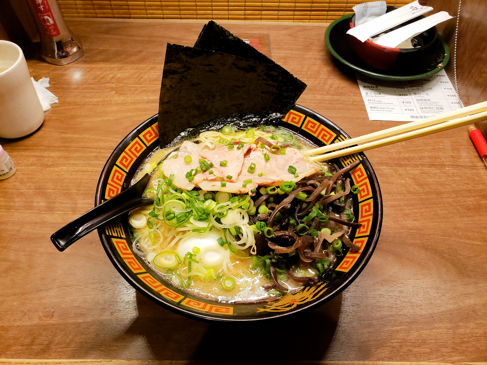

DécouvreL'histoire du plat ramen
Le ramen, dont les origines remontent à la Chine, est une variante d'un plat appelé Lamian, dans lequel les nouilles étaient confectionnées depuis des siècles. Au cours du 19e siècle, cette délicieuse spécialité culinaire a été introduite au Japon par les Chinois, marquant ainsi le début de son voyage vers la renommée internationale.

Que de bonne saveurEt fait avec amour
Les ramen au porc sont un plat japonais emblématique composé de nouilles servies dans un bouillon savoureux, garnies de viande de porc. Les nouilles sont généralement faites à partir de farine de blé et d'eau, tandis que le bouillon est préparé en cuisant lentement des os de porc et d'autres ingrédients aromatiques pour obtenir une base riche en saveurs.